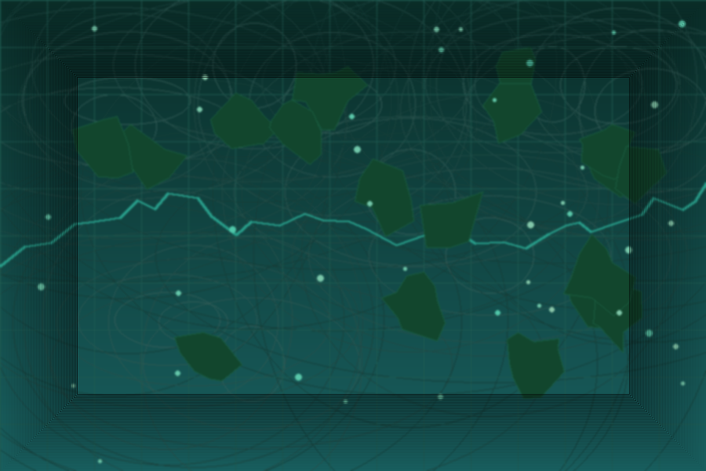

Johan Karlsson
GIS-specialist & Earth Observation Analyst
Carbon MRV · Forest Monitoring · Biodiversity · Spatial Data Science
About Me
I am a GIS specialist and Earth Observation analyst with a background in biology and primate conservation. My work sits at the intersection of remote sensing, spatial data science, and environmental decision-making — primarily in carbon certification, forest change monitoring, and biodiversity assessment.
I work with Google Earth Engine, QGIS, Python, and PostgreSQL/PostGIS to build reproducible analysis pipelines, land cover change maps, and MRV workflows for carbon standards including Gold Standard, VCS/VM0047, and Plan Vivo. I am the founder of Komba GIS AB, a GIS consultancy focused on nature, forestry, and climate applications.
I am currently seeking new assignments in GIS analysis, Earth Observation, and carbon/nature-based solutions — based in Djursholm (Stockholm), Sweden with remote and field flexibility.

Highlights
- Carbon & MRV: Gold Standard (GS4GG), VCS/VM0047 and Plan Vivo workflows, from data sourcing to maps and reporting.
- Forest & mangrove monitoring: change detection and time-series analysis (Sentinel-2, Landsat, Hansen GFC, GMW).
- Biodiversity & NRM: hotspot mapping and SDM workflows combining remote sensing and field/occurrence data.
- Reproducible delivery: documented pipelines using Python/SQL, QGIS QA, and Git/GitHub for traceability.
Featured Projects
-
Prototype MRV pipeline for A/R projects integrating field data, land cover analysis and automated reporting.
-
Reusable toolkit for VM0047 Performance Benchmark analysis applicable to any project area worldwide.
-
Year-by-year mangrove loss analysis combining Hansen GFC with Global Mangrove Watch extent.
What I Can Help With
-
Remote sensing & land cover change
Scoping, dataset selection, classification/change workflows, and map-ready outputs.
-
MRV support & documentation
Traceable methods, QA/QC, and reproducible workflows aligned with carbon standards.
-
Geodata pipelines & automation
Python + PostGIS pipelines, processing at scale, and delivery formats (COG, STAC, GeoParquet).
Skills
-
GIS & Remote Sensing
- QGIS (advanced), ArcGIS Pro, ArcGIS Online
- Google Earth Engine — time series & land cover change
- GDAL / OGR, GRASS GIS
- Sentinel-2, Landsat, Planet imagery analysis
-
Programming & Automation
- Python — GeoPandas, Rasterio, NumPy, Pandas
- R — sf, terra, ggplot2, biomod2
- SQL — PostgreSQL + PostGIS
- FME Form (in progress), GitHub Actions CI/CD
-
Carbon & MRV
- Gold Standard (GS4GG), VCS / VM0047, Plan Vivo
- Afforestation / Reforestation MRV workflows
- Performance Benchmark analysis
- Soil carbon modeling (MODIS, SoilGrids, GRIDMET)
-
Forest & Land Cover Change
- Hansen Global Forest Change (GFC)
- CCDC change detection & classification
- Global Mangrove Watch (GMW v3)
- ESA WorldCover, ESRI LULC, NMD (Sweden)
-
Data & Infrastructure
- PostgreSQL + PostGIS
- Cloud-native geospatial (COG, STAC, GeoParquet)
- Mergin Maps field data collection & QA/QC
- Reproducible pipelines with Git & GitHub Actions
-
Biodiversity & NRM
- Species Distribution Modeling (MaxEnt / biomod2)
- AlphaEarth satellite embeddings
- Naturvärdesinventering (NVI) methodology
- Habitat mapping and fragmentation analysis